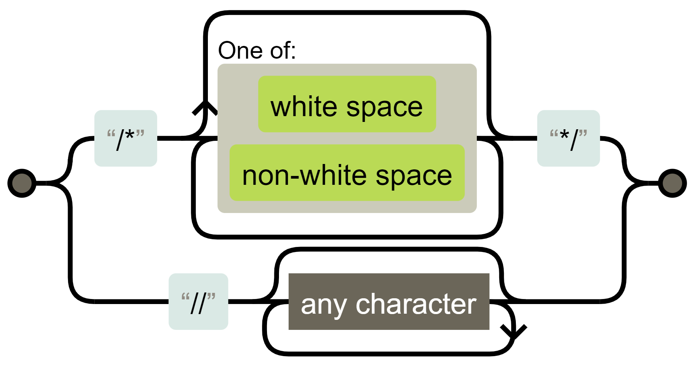

Регулярні вирази JavaScript — це потужний інструмент для роботи з текстом, що дозволяє шукати, перевіряти, витягувати і змінювати рядки за заданими шаблонами. Вони часто використовуються для таких завдань, як валідація даних (наприклад, перевірка адрес електронної пошти або номерів телефонів), пошук і заміна фрагментів тексту, а також отримання інформації, що відповідає певним критеріям (наприклад, дати, ключові слова).
console.log("Hello");Використання регулярних виразів допомагає скоротити код та спростити обробку тексту.
У JavaScript регулярні вирази реалізовані окремим об'єктом
RegExp і інтегровані в методи роботи з рядками.
Регулярний вираз — це послідовність символів, яка визначає правила пошуку. Він складається з шаблону та необов’язкових модифікаторів.
Без модифікаторів і спеціальних символів, які ми розглянемо пізніше, пошук за регулярним виразом аналогічний пошуку підрядка.
У JavaScript є два основні способи створення регулярних виразів:
/pattern/modifiers; // синтаксис
let regex1 = /hello/;
let regex2 = /[a-z]/gi; RegExplet regex1 = new RegExp("hello");
let regex3 = new RegExp("[a-z]", "gi");Літеральну нотацію зручно використовувати, коли шаблон відомий
заздалегідь і не змінюється — а це більшість ситуацій. Слеші
/.../ повідомляють JavaScript, що це регулярний вираз. Вони
виконують таку ж роль, як лапки для рядків.
Конструктор RegExp дозволяє створювати регулярні вирази
динамічно, «на льоту», наприклад, коли шаблон чи модифікатори задає
користувач.
let tag = prompt("Який тег ви хочете знайти?", "h2");
let regexp = new RegExp(`<${tag}>`); Якщо користувач відповість на prompt рядком "h2", то вийде регулярний
вираз /<h2>/.
Регулярні вирази можуть мати модифікатори, які змінюють поведінку виразу чи надають додаткову інформацію.
| Модифікатор | Опис |
|---|---|
| i | Виконує пошук без врахування регістру: немає різниці між
A та a. |
| g | Шукає всі збіги, а не лише перший (глобальний пошук). |
| m | Вмикає багаторядковий режим (multiline). |
| y | Шукає лише з певної позиції (sticky). |
| u | Вмикає повну підтримку Unicode. Забезпечує правильну обробку сурогатних пар. |
| s | Дозволяє крапці (.) відповідати символу нового рядка
(режим dotall). |
| d | Дозволяє отримувати інформацію про позиції збігів у рядку (новинка в ES2022). Додає властивість-масив indices до результату з індексами початку і кінця підрядків. |
Модифікатори можна вказувати двома способами:
/pattern/flags.// Обидва варіанти еквівалентні
let regex1 = /hello/gi;
let regex2 = new RegExp('hello', 'gi');Модифікатори можна комбінувати:
let text = "Hello HELLO hello";
console.log(text.match(/hello/gi)); // ['Hello', 'HELLO', 'hello']Приклади
console.log(/hello/.test('HELLO')); // false
console.log(/hello/i.test('HELLO')); // true'hello hello'.match(/hello/) // 'hello'
'hello hello'.match(/hello/g) // ['hello', 'hello']console.log('line1\nline2'.match(/^line/g)); // [ 'line' ]
console.log('line1\nline2'.match(/^line/gm)); // ['line', 'line']let multiline = `First line
Second line
Third line`;
// ^ и $ тепер працюють для кожного рядка
console.log(multiline.match(/^Second/)); // null
console.log(multiline.match(/^Second/m)); // ['Second']let regex = /\d/y;
regex.lastIndex = 1;
'a1b2'.match(regex) // ['1']
regex.lastIndex = 3;
'a1b2'.match(regex) // '2'/\u{1F600}/u.test('😀') // true
console.log(/^.$/u.test('😀')); // truelet str = "Hello World";
let regexp = /World/d;
let result = regexp.exec(str);
console.log(result.indices[0]); // [6, 11]Output: 6 - початкова позиція збігу, 11 - кінцева позиція збігу.
Модифікатор d корисний, коли потрібно:
Важливо знати:
Модифікатори можуть суттєво впливати на продуктивність
регулярних
виразів, особливо під час роботи з великими текстами.
Кілька символів або символьних класів у квадратних дужках
[…]
означають «шукати будь-який символ із заданих».
Наприклад, [eao] означає будь-який із трьох символів:
'a', 'e' або
'o'. Це називається набором.
Зверніть увагу, що в наборі кілька символів, але в результаті
він
відповідає рівно одному символу.
У квадратних дужках можна вказувати діапазони, наприклад,
[a-z]
відповідає символу в діапазоні від a до z, або [0-5] —
цифра від 0
до 5.
У [0-9A-F] одразу два діапазони: шукається символ, який
або цифра від 0
до 9, або літера від A до F.
Якщо ми хочемо знайти літери як у верхньому, так і в нижньому
регістрі, то можемо
додати діапазон: [0-9A-Fa-f]. Або встановити у регулярному
виразі
модифікатор i.
| Вираз | Опис |
|---|---|
[abc] |
Знайти будь-який із символів у дужках |
[^abc] |
Знайти будь-який символ, крім вказаних у дужках |
[0-9] |
Знайти будь-яку цифру у дужках від 0 до 9 |
(x\|y) |
Знайти будь-яку з альтернатив, розділених знаком
\| |
Символьні класи - це лише скорочення для наборів символів.
| Клас | Еквівалент | Опис |
|---|---|---|
\d |
[0-9] |
цифра від 0 до 9 |
\w |
[a-zA-Z0-9_] |
символ слова |
\s |
[ \t\n\v\f\r] |
пробільний символ, плюс кілька рідкісних символів пробілів Юнікоду |
\D |
[^\d] |
будь-який символ, крім цифри |
\W |
[^\w] |
будь-який символ, крім \w, тобто не літери та не цифри
та не знак підкреслення |
\S |
[^\s] |
будь-який непробільний символ |
Для прикладу, \d\s\w позначає цифру, за якою йде символ
пробілу, а потім символ слова, наприклад 1 a.
Знайдемо першу цифру в номері телефону:
let str = "+1(900)-123-45-67";
let regexp = /\d/;
console.log(str.match(regexp)); // 1Давайте додамо модифікатор g, щоб знайти всі цифри:
let str = "+1(900)-123-45-67";
let regexp = /\d/g;
console.log(str.match(regexp));
// масив збігів: 1,9,0,0,1,2,3,4,5,6,7
// можна зробити з них чисто цифровий номер телефону
console.log(str.match(regexp).join('') ); // 19001234567Альтернативний, більш короткий шлях - знайти нецифрові символи
\D і видалити їх з рядка:
let str = "+1(900)-123-45-67";
console.log(str.replace(/\D/g, "")); // 19001234567Важливо знати:
Всередині наборів символів метасимвол '|' сприймається
як типовий знак. Наприклад, [bak|bok|buk] означає рівно те
саме, що і [baouk|].
Регулярний вираз може містити як звичайні символи, і символьні класи.
Крапка . - це спеціальний символьний клас, який
відповідає "будь-якому символу, крім нового рядка".
Зверніть увагу, що крапка означає будь-який символ, але не відсутність символу.
Є три види позицій, які є межами слова:
\w.\w,
а праворуч — не \w, або навпаки.\w.Наприклад, регулярний вираз \bJava\b буде знайдено у
рядку
Hello, Java!, де Java — окреме слово, але не
буде знайдено у рядку Hello, JavaScript!.
Ми можемо використовувати \b не тільки зі словами, але й
із цифрами.
Наприклад, регулярний вираз \b\d\d\b шукає окремо
розташовані числа. Іншими словами, він вимагає, щоб і до і після
\d\d були символи, відмінні від \w, такі як
пробіли або пунктуація (або початок/кінець тексту).
Приклад
console.log( "1 23 456 78".match(/\b\d\d\b/g)); // [ '23', '78' ]
console.log( "12,34,56".match(/\b\d\d\b/g)); // [ '12', '34', '56' ]Можна думати про \b як про символ нульової ширини,
вставлений автоматично в потрібних місцях. При цьому у результаті їх не
видно (вони ж нульової ширини), хоча відповідність шаблону є.
Символи ^ та $ мають спеціальні значення в
регулярних виразах. Вони називаються «якорі» (anchors).
^ означає збіг з початком тексту, а $ — з
кінцем.
| Модифікатор | Опис |
|---|---|
^m |
Знайти будь-які рядки, які містять m на початку |
m$ |
Знайти будь-які рядки, які містять m наприкінці |
Давайте перевіримо чи починається текст з Mary:
let str1 = "Mary had a little kitten";
console.log( /^Mary/.test(str1) ); // trueШаблон ^Mary означає: «початок рядка, потім Mary».
Аналогічно можна перевірити, чи закінчується рядок словом fluffy:
let str1 = "The kitten was fluffy";
console.log( /fluffy$/.test(str1) ); // trueПеревіримо, що рядок є часом у форматі 12:34, тобто дві
цифри, потім двокрапка, потім ще дві цифри.
let goodInput = "12:34";
let badInput = "12:345";
let regexp = /^\d\d:\d\d$/;
console.log( regexp.test(goodInput) ); // true
console.log( regexp.test(badInput) ); // falseЗверніть увагу: символ ^ після квадратної дужки має
інший сенс - це ознака початку негативного набору (negative set).
Важливо знати:
Поведінка якорів змінюється, якщо присутній модифікатор
m.
Квантифікатори дозволяють задати кількість повторень:
| Quantifier | Опис |
|---|---|
m{X} |
Знайти будь-які рядки, що містять послідовність m, X разів |
m{X, Y} |
Знайти будь-які рядки, що містять послідовність m, від X до Y разів |
m{X,} |
Знайти будь-які рядки, що містять послідовність m як мінімум X разів |
Найпростіший квантифікатор — це число у фігурних дужках:
{n}. Він додається до символу (або символьного класу, або
набору) і вказує скільки символів або наборів нам потрібно.
Шаблон \d{5} позначає рівно 5 цифр, він еквівалентний
\d\d\d\d\d.
Наступний приклад знаходить п'ятизначне число:
console.log("I'm 12345 years old".match(/\d{5}/) ); // "12345"Ми можемо додати \b, щоб виключити числа довші:
\b\d{5}\b.
Для того, щоб знайти числа від 3 до 5 цифр, ми можемо вказати межі у
фігурних дужках: \d{3,5}
Для найбільш затребуваних квантифікаторів є скорочені форми запису:
| Квантифікатор | Опис |
|---|---|
n+ |
Означає «один або більше». Те саме, що й {1,} |
n? |
Означає «нуль або один». Те саме, що й {0,1}. По суті
робить символ необов'язковим |
n* |
Означає «нуль або більше». Те саме, що й {0,}. Тобто
символ може повторюватися багато разів або взагалі бути відсутнім |
Квантифікатори використовуються дуже часто. Вони є основними «будівельними блоками» складних регулярних виразів.
Як мовилося раніше, використання регулярних висловів інтегровано у методи рядків.
Метод str.match(regexp) для рядка str
повертає збіги з регулярним виразом regexp.
У нього є три режими роботи:
g, він повертає
масив всіх збігівg, повертається null.Це важливий аспект. За відсутності збігів повертається не порожній
масив, а саме null. Якщо про це забути, можна легко
припуститися помилки, наприклад:
let matches = "JavaScript".match(/HTML/); // = null
if (!matches.length) { // Помилка: у null немає властивості length
console.log("Помилка у рядку вище");
}Якщо хочеться, щоб результатом завжди був масив, можна написати так:
let matches = "JavaScript".match(/HTML/) || [];
if (!matches.length) {
console.log("Збігів немає"); // тепер працює
}Метод str.matchAll(regexp) - "новий, покращений" варіант
методу str.match.
Він використовується, в першу чергу, для пошуку всіх збігів разом із групами скобок.
Важливо знати:
Ця можливість була додана в мову нещодавно. У старих браузерах може знадобитися поліфіл.
У нього 3 відмінності від match:
Array.from.str.match без g).null, а порожній
об'єкт, що перебирається.Приклад
let str = '<h1>Hello, world!</h1>';
let regexp = /<(.*?)>/g;
let matchAll = str.matchAll(regexp);
console.log(matchAll);
// [object RegExp String Iterator], не масив, а об'єкт, що перебирається
matchAll = Array.from(matchAll); // тепер масив
let firstMatch = matchAll[0];
console.log( firstMatch[0] ); // <h1>
console.log( firstMatch[1] ); // h1
console.log( firstMatch.index ); // 0
console.log( firstMatch.input ); // <h1>Hello, world!</h1>При переборі результатів matchAll у циклі
for..of виклик Array.from, зрозуміло, не
потрібен.
Метод str.search(regexp) повертає позицію першого збігу
з regexp у рядку str або -1, якщо збігу
немає.
Приклад
let str = "I love JavaScript!";
let regexp = /Java.+/;
console.log(str.search(regexp)); // 7Важливе обмеження: str.search вміє повертати лише
позицію першого збігу. Всі входження можна знайти, наприклад, за
допомогою str.matchAll(regexp).
Метод str.replace(regexp, replacement) замінює збіги з
regexp у рядку str на replacement
(всі, якщо є модифікатор g, інакше тільки перше).
Приклад
console.log("We will, we will".replace(/we/i, "I")); // I will, we will
console.log("We will, we will".replace(/we/ig, "I")); // I will, I willУ рядку заміни replacement ми можемо використовувати
спеціальні комбінації символів для вставки фрагментів збігу:
| Спецсимволи | Дія у рядку заміни |
|---|---|
$& |
вставляє весь знайдений збіг |
$` |
вставляє частину рядка до збігу |
$' |
вставляє частину рядка після збігу |
$n |
вставляє вміст n-ї групи регулярного виразу |
$<name> |
вставляє вміст групи з ім'ям name |
$$ |
вставляє символ "$" |
Приклад
console.log("I love HTML".replace(/HTML/, "$& и JavaScript") );
// I love HTML и JavaScriptДля ситуацій, які вимагають «розумних» замін, другим аргументом може бути функція. Вона буде викликатись для кожного збігу, і її результат буде вставлений як заміна.
Метод regexp.test(str) перевіряє, чи є хоч один збіг,
якщо так, то повертає true, інакше false.
let str = "I LoVe JavaScript";
let regexp = /love/i;
console.log(regexp.test(str)); // trueВам не обов'язково спочатку поміщати регулярний вираз у змінну:
console.log(/love/i.test("I LoVe JavaScript")); // trueМетод regexp.exec(str) шукає збіг з regexp
у рядку str.
Метод exec поводиться по-різному залежно від цього, чи
має регулярне вираз модифікатор g.
g, то regexp.exec(str) повертає
перший збіг точно як str.match(regexp). Така поведінка не
дає нам нічого нового.g, то:
regexp.exec(str) повертає перший збіг і
запам'ятовує позицію після нього як regexp.lastIndex.regexp.lastIndex, повертає наступний збіг і запам'ятовує
позицію після нього в regexp.lastIndex.regexp.exec повертає
null, а для regexp.lastIndex встановлюється
значення 0.До появи методу str.matchAll у JavaScript, виклик
regexp.exec використовували для отримання всіх збігів з
їхніми позиціями та групами дужок у циклі.
Ми можемо використовувати regexp.exec для пошуку збігу,
починаючи з потрібної позиції, якщо вручну поставимо
lastIndex.
let str = 'Hello, world!';
let regexp = /\w+/g; // без g властивість lastIndex ігнорується
regexp.lastIndex = 5; // шукаємо з 5-ї позиції (тобто з коми і далі)
console.log( regexp.exec(str) ); // worldІснує кілька зручних інструментів для тестування та візуалізації регулярних виразів.
Regexper - інструмент з відкритим кодом, який працює прямо в браузері без необхідності встановлення. Він допомагає зрозуміти, як працює регулярний вираз, перетворюючи його на наочну діаграму (Railroad Diagram).
Приклад
У Javascript є два види коментарів: // и
/*...*/. Регулярний вираз для пошуку коментарів можна
візуалізувати:
/\/\*[\s\S]*?\*\/|\/\/.*/
Діаграми корисні для пошуку помилок у своїх регулярних виразах та полегшують модифікацію складних виразів, написаних іншими авторами.
regex101 - ще один популярний онлайн-сервіс, що допомагає створювати та налагоджувати регулярні вирази. Він пропонує покрокове пояснення збігів та підсвічування синтаксису, надає довідкові матеріали щодо синтаксису регулярних виразів.
Головна користь цих інструментів - миттєвий зворотний зв'язок. Вони підсвічують збіги та пояснюють, чому якісь частини шаблону не спрацювали.
Повну інформацію можна знайти у нашому Повному довіднику з регулярних виразів JavaScript.
todo: дати посилання
const text = "many spaces here";
console.log(text.replace(/\s+/g, ' '));
// результат: "many spaces here"Давайте витягнемо всі числа з тексту.
let regex = /\d+/g;
let res = "Pinocchio had 1 alphabet and 30 soldi".match(regex);
console.log(res);match() - це метод рядка, exec() - це метод
регулярного виразу.
const text = "test1 test2";
// match() повертає всі збіги відразу
console.log(text.match(/test\d/g)); // ['test1', 'test2']
// exec() повертає по одному збігу за виклик
const regex = /test\d/g;
console.log(regex.exec(text)); // ['test1']
console.log(regex.exec(text)); // ['test2']Який метод обрати?
match() коли потрібно знайти всі збіги
одразу (з флагом g)exec() коли потрібна детальна інформація
про збіги або коли потрібно обробляти збіги по одномуВикористовуйте (?:...)
const text = "I love Javascript";
console.log(text.match(/(?:I) (love)/));
// ['I love', 'love']Використовуйте конструкцію try/catch
try {
const userInput = "* (";
new RegExp(userInput);
} catch (e) {
console.log("Некоректний регулярний вираз");
}Щоб уникнути синтаксичних помилок, перевіряйте регулярні вирази в спеціальних інструментах (онлайнових тестерах, IDE з підсвічуванням тощо).
Зворотна коса риса використовується для позначення класів символів,
наприклад \d. Це спеціальний символ у регулярних виразах
(як і у звичайних рядках).
Є й інші спеціальні символи, які мають особливе значення у
регулярному вираженні. Вони використовуються для більш складних
пошукових конструкцій. Ось перелік цих символів:
[ ] \ ^ $ . | ? * + ( ).
Допустимо, ми хочемо знайти буквально крапку. Не «будь-який символ», а саме крапку.
Щоб використовувати спеціальний символ як звичайний, додайте до нього
зворотну косу рису: \..
Це називається "екранування символу".
const price = "$100.50";
// Неправильно: const regex = /$/;
// Правильно:
const regex = /\$/;Круглі дужки також є спеціальними символами, тому якщо нам потрібно
використовувати саме їх, потрібно вказати \(.
Символ косої риси /, так званий "слеш", не є спеціальним
символом, але в JavaScript він використовується для відкриття і закриття
регулярного виразу: /...шаблон.../, тому ми повинні
екранувати його.
Ось як виглядає пошук косої риси:
console.log("/".match(/\//)); // '/'З іншого боку, якщо ми не використовуємо запис /.../, а
створюємо регулярний вираз, використовуючи new RegExp, тоді
нам не потрібно екранувати косу рису:
console.log( "/".match(new RegExp("/")) ); // знаходить /Вираз .* не захоплює перехід на новий рядок, на відміну
від \s\S.